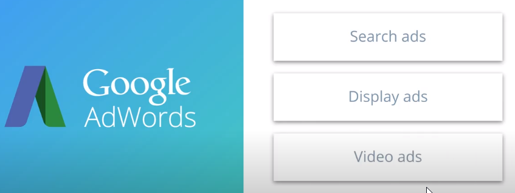
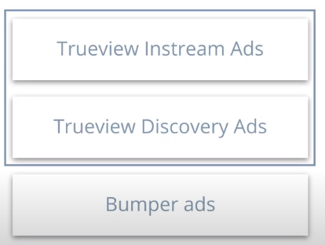

-->On average US adults spend 1 hour and 8 minutes per day watching online video
-->Users who watch video on mobile device are typically more focused than users who watch on a desktop so of course, that has also caught the attention of advertisers
----------------------------------------------------------- Instream vs. Outstream Video Ads
Instream video ads:
These are video ads that are played before (pre-roll ad), during (mid-roll ad) or after (post-roll ad) a video.
These ads typically cannot be stopped from playing. In some cases the user can skip the ads after a few seconds.
In some cases, a group of ads will play subsequently. Such a group is sometimes referred to as an Ad Pod.
Outstream video ads: These are video ads that take place outside of the in-line video experiences.
There are several types of outstream ads:
Native Video: Video ads integrated into the format of a website. These ads typically include a headline, a description, and context for the ad.
Example: Native Video Ad on the Yahoo! Front Page
In-article Video: Video ad that plays between paragraphs of editorial text conten
t
Example: In Article Video Car Ad
In-feed Video: A native video ad in a social feed (e.g. Twitter), often paired with a headline, description and logo
Example: Video Ad in Twitter Feed
Interstitial: Video that appears between two content pages (sometimes also referred to as a transition ad, an intermercial ad or a splash page)
-----------------------------------------------------
Autoplay vs. Interactive Video Ads
Autoplay Video Ads: Video ad starts playing without any user interaction
Interactive Video Ads: Video ads that respond to user input. That input could be starting, pausing or stopping the ad. But it can also be other actions like clicking, filling out a poll inside the video, etc. The interaction is meant to engage the user more with the ad.
--------------------------------------------------------- Long Form vs. Short Form Video
Long Form Video: Longer pieces of video content (more than 10 mins), typically telling a full story (e.g., movies, original series, etc.).
Short Form Video: Video with a duration of less than 10 mins.
--------------------------------------------------------- Tips for effective video advertising online
1-Target your ads to your audience
2-Create high quality video
3-Focus on the beginning of the video
4-Make your ad work without audio
5-Use short video ads
6-Choose the tone of the ad based on your objective
7-Include a call to action
--------------------------------------------------------
-->Video advertising can be done on any budget and does not to be more expensive than other forms of advertising


Trueview-->only pay for ads when users actually engage with your ad so the idea is that adverisers can rest assure that their ads have truly been viewed
--------------------------------------------------------
Review
Two tactics to use are:
Pause keywords with high CPC
Expand the list of keywords with keywords similar to the best performing keywords
 Example: In Article Video Car Ad
Example: In Article Video Car Ad